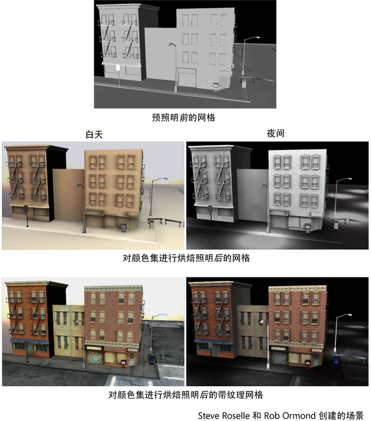
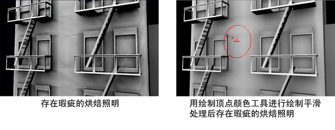

可以使用逐顶点颜色集切换、合并、融合或全局修改存储在多边形网格顶点上的颜色。
例如，可以通过将场景中的每个多边形网格的日间照明烘焙到一个颜色集，然后将夜间照明烘焙到另一个颜色集，从而预照明场景。有关预照明的详细信息，请参见预照明多边形。

也可以通过将顶点颜色直接绘制到颜色集来润色烘焙的照明结果。“绘制顶点颜色工具”(Paint Vertex Color Tool)可用于移除或替换（变暗或变亮）在顶点上烘焙的照明，或对其进行平滑处理。请参见通过绘制为多边形顶点指定颜色

除了存储烘焙的照明数据外，还可以使用颜色集执行下列操作：
- 将黑色值和白色值添加到网格以表示凹凸。
- 使用绘制的顶点颜色代替阻塞体积。例如，可以设置游戏引擎，使角色在顶点颜色值绘制为白色时可以行走，绘制为黑色时不可以行走。
- 将数据传递给游戏引擎，其可用于定义规则或约束。例如，绘制允许角色行走的区域。Maya 中不会使用该数据，因此其类似于与多边形关联的盲数据。请参见盲数据(Blind Data)。
可以使用“修改”(Modify)功能，借助 HSV 属性修改器或 RGBA 颜色通道属性修改器来全局修改现有已烘焙 CPV 颜色集。“修改”功能可创建 CPV 颜色集下游的“polyColorMod”节点。
如果需要全局修改现有颜色集且不希望再次烘焙对象的颜色和照明，“修改”(Modify)功能将非常有用。如果要修改现有颜色集以满足某些计算机和交互式游戏平台的特定 Gamma 要求，“修改”(Modify)功能也同样非常有用。有关详细信息，请参见全局修改现有颜色集。
创建颜色集
- 在场景视图中，选择要为其创建颜色集的多边形网格。
- 在“建模”(Modeling)菜单集中，选择。
- 在
“颜色集编辑器”(Color Set Editor)
中，单击“新建”(New)。
此时将打开
“创建空颜色集选项”(Create Empty Color Set Options)
窗口。
- 为选定网格设置选项，然后单击“应用并关闭”(Apply and Close)。
创建了新颜色集。
重命名现有颜色集
- 在场景视图中，选择要重命名其颜色集的网格。
- 执行下列操作之一：
此时将出现“重命名颜色集”(Rename Color Set)窗口。
- 删除颜色集的当前名称，键入一个新名称，然后单击“确定”(OK)。
选定颜色集现在具有指定的新名称。
删除颜色集
- 在场景视图中，选择要删除其颜色集的网格。
- 执行下列操作之一：
将删除选定颜色集。
合并颜色集
- 在场景视图中，选择要合并其颜色集的网格。
- 在“颜色集编辑器”(Color Set Editor)中，选择要合并的第一个颜色集，然后按住 Shift 键并单击要与其合并的其他颜色集。
一次只可以将一个颜色集合并或收拢到另一个颜色集中。另外，自上而下进行合并。
- 单击“颜色集编辑器”(Color Set Editor)中的“合并”(Merge)。
将使用“覆盖”(Over)融合样式选项合并两个颜色集；并为替代原始集的新颜色集创建“blendColorSets”节点。新颜色集与选定的第一个颜色集具有相同的名称。
注： 可以从“属性编辑器”(Attribute Editor)中的“blendColorSets”节点更改已合并颜色集的“融合样式”(Blend Style)。
融合颜色集
- 在场景视图中，选择要融合其颜色集的对象。
- 在“颜色集编辑器”(Color Set Editor)中，选择要融合的第一个颜色集，然后按住 Shift 键并单击要与其融合的其他颜色集。
一次只能融合两个颜色集。另外，自上而下进行融合。
- 从位于“融合”(Blend)按钮下的融合下拉列表中选择融合样式。
请参见融合。
- 单击“颜色集编辑器”(Color Set Editor)中的“融合”(Blend)按钮。
选定的两个颜色集将从最顶层到最底层选择进行融合。该融合使用指定的“融合样式”(Blend Style)。将为创建的新颜色集创建“blendColorSets”节点。默认情况下，融合的颜色集在“颜色集编辑器”(Color Set Editor)窗口中命名为“blendedColorSet”。
全局修改现有颜色集
- 在场景视图中，选择要修改其颜色集的对象。
- 在“颜色集编辑器”(Color Set Editor)中，选择要修改的颜色集，然后单击“修改”(Modify)按钮。
将为选定颜色集创建“polyColorMod”节点，且显示“属性编辑器”(Attribute Editor)，其中“polyColorMod”节点选项卡处于选中状态。
- 修改 HSV 颜色修改器或 RGBA 颜色通道修改器的属性，并注意对场景视图中对象上的颜色集所做的更改。
注： 将在现有 CPV 颜色集节点的下游创建“polyColorMod”节点。应仅在完成 CPV 颜色指定和光烘焙后，在制作流程后期使用“修改”(Modify)功能。
对“polyColorMod”节点所做的颜色修改是累积的。通常，应将颜色修改应用于 HSV 全局修改器或 RGBA 颜色通道修改器。
注： 逐顶点颜色 (CPV)“材质融合设置”(Material Blend Settings)的显示因场景视图“着色”(Shading)设置而异。在启用了“硬件纹理”(Hardware Texturing)的纹理和着色模式下，“相加”(Add)、“相减”(Subtract)和“相乘”(Multiply)融合模式的显示质量将稍有降低。可以通过切换到启用了“硬件纹理”(Hardware Texturing)（）的“高质量渲染”(High Quality Rendering)模式（），显示所有融合模式的正确结果。如果显卡不支持“高质量渲染”(High Quality Rendering)模式，可以使用“硬件渲染器”(Hardware Renderer)测试渲染，以预览结果。如果显卡可能不支持“高质量渲染”(High Quality Rendering)或“硬件渲染器”(Hardware Renderer)，可以切换到“硬件着色”(Hardware Shaded)模式（按键盘上的 5 键）以预览不含纹理的融合。